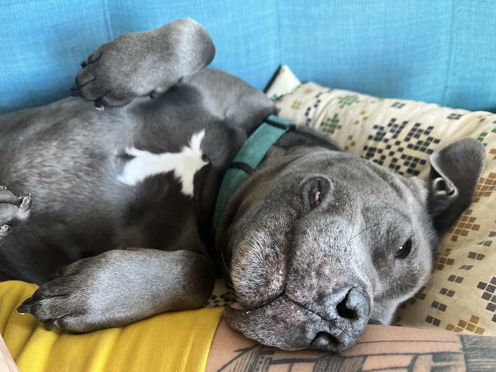

Hi, I'm Christa Hartsock.
I care a lot about government services and how they could be better. I'm also interested in futures not fully dictated by capitalism.
I'm currently a consulting engineer at 18F, the US federal government's technology and design consultancy. I live in San Francisco with my husband, Jim Fingal, and our dog, Piglet.
In the past I've been an engineering manager, software engineer, and engineering lead at Code for America, working to improve access to criminal record relief as part of Clear My Record, and help ease the burden of getting safety net benefits through the Integrated Benefits Initiative and GetCalFresh.
Prior to working with government, I've worked as an engineer at the agile consultancy Pivotal Labs (RIP) and at another small product consultancy, as a studio manager at an architecture firm, as a travel guide writer in Barcelona, on a variety of cleanup crews, and a bunch of other things.
I help publish Logic Magazine, and have been running a small forum I built for friends for the last while.
I exist a few other places:
- my (infrequent) email newsletter
- mastodon
- github
- goodreads
- my powerlifting instagram
- bookwyrm (federated, non-corporate goodreads)
- email: christa (dot) hartsock (at) gmail (dot) com
- offline, mostly in san francisco
If you'd like to talk, shoot me a message via email. I'm often slow at responding, but do have the best intentions. Short, direct asks usually get a response more quickly.
Thanks for visiting; here is a gift:
